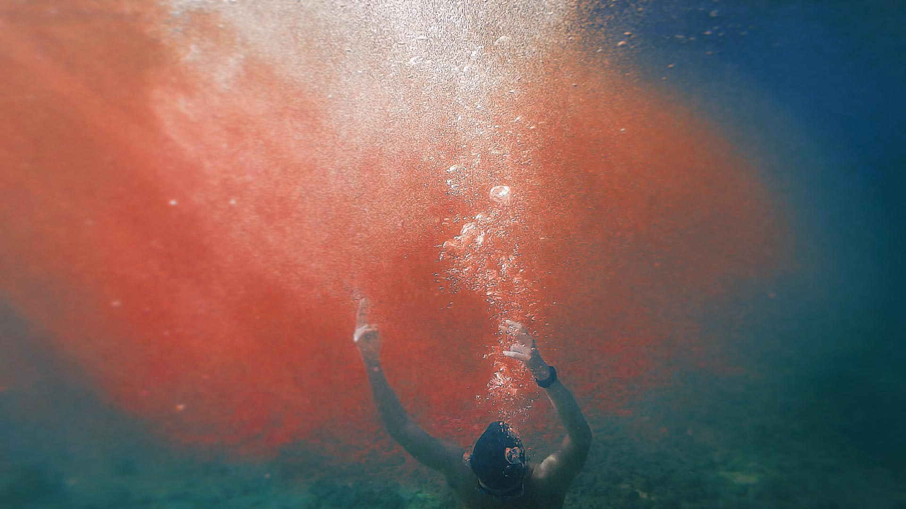

Jingkang Zhang
's Writings
Will all great Neptune's ocean wash this blood clean from my hands?
No, these my hands will rather the multitudinous seas
incarnadine
.

Essays
Justifying “Improbable Fictions”: Metatheatricality in Shakespeare
The Effect of Sound in Paradise Lost
Scene Analysis: The Winter's Tale 1.2 by Shakespeare
Software Reuse and Open Source Software
The “Despised” And “Used” Love Of Hamlet
The Role Of Poetic Rhythm In The Journey Of Mind By Barbauld
Creative Work
On React Hooks (Sonnet)
Sonnet on Facebook React Hook (a front-end web technology)
The Router (Sonnet)
Sonnet on Internet Routers
Secure Or Not Secure
Parody of Hamlet's "to-be-or-not-to-be"-soliloquy on topics in computer security
Dante's Inferno Creative Project
Upon Something
Oroonoko X Satan in Paradise Lost
A response to Alexander Pope's Essay On Criticism
Elden Ring Sonnet: To Marika, by Gurranq, The Beast Clergyman
Shakespeare Wordbook
Sonnets
Henry IV, Part 1
Hamlet
![]()